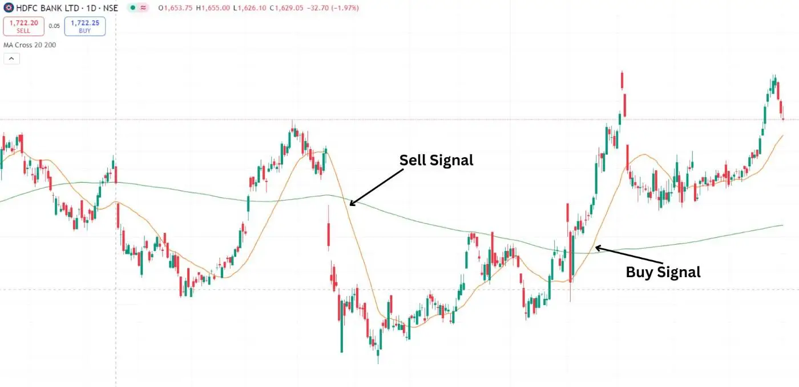
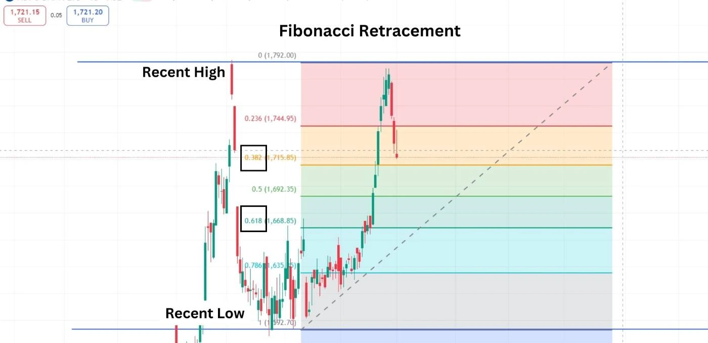
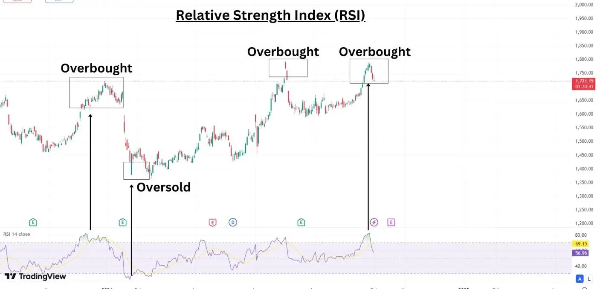
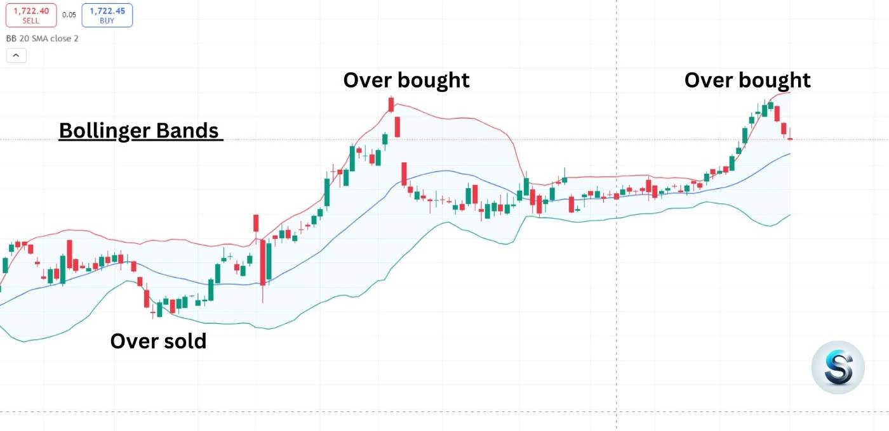
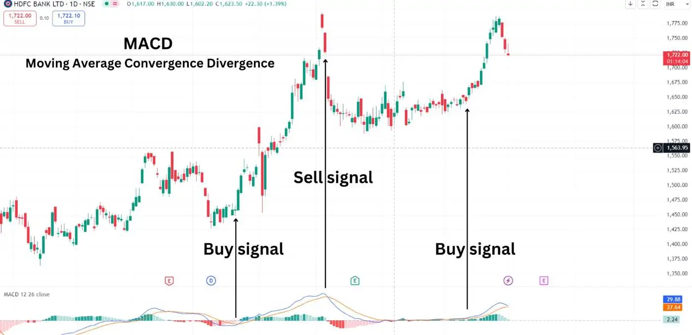
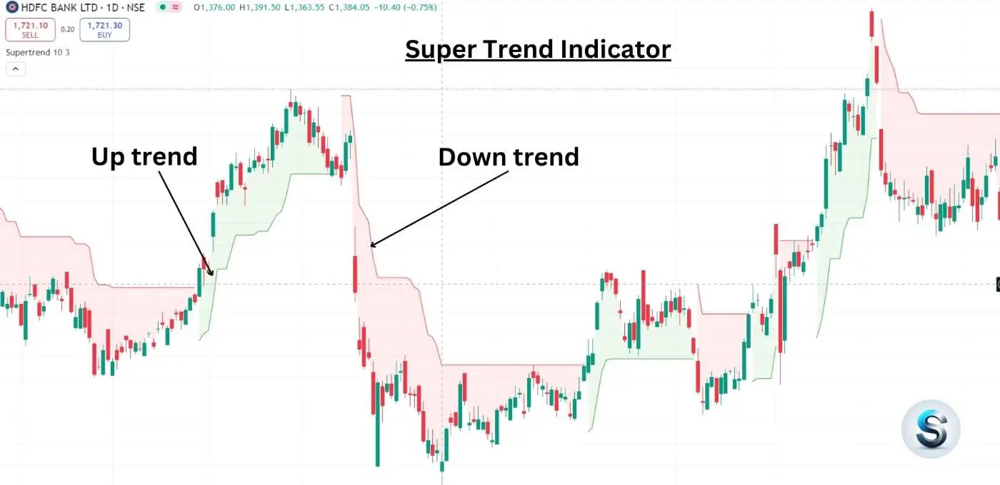
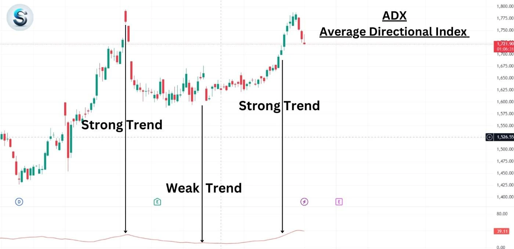

Table of Content
- 1. Moving Averages (MA)
- i) Simple Moving Average (SMA)
- ii) Exponential Moving Average (EMA)
- 2. Fibonacci Retracement
- 3. Relative Strength Index (RSI)
- 4. Bollinger Bands (BB)
- 5. MACD (Moving Average Convergence Divergence)
- 6. Super Trend Indicator
- 7. Average Directional Index (ADX)
- Conclusion
- Frequently Asked Questions
Share market indicators - Top Technical indicators Explain
In the stock or share market, technical indicators are tools that traders use to analyse stock price movements and make decisions about buying or selling shares. Unlike fundamental analysis, which looks at a company’s financial health but Share market indicators technical analysis focuses on price patterns and trading volumes.

1. Moving Averages (MA)
Moving averages level out price data to help identify trends. Moving Averages are calculated over a specific period, like 20 days or 200 days and you can edit custom days.
There are two types of MA i) Simple Moving Average and ii) Exponential Moving Average.
i) Simple Moving Average (SMA)
Simple Moving Average is the average price over a number of days. Such as, a 40-day Simple Moving Average adds up the closing prices of the last 40 days and divides it by 40.
ii) Exponential Moving Average (EMA)
This gives more weight to recent prices, making it more responsive to new information data.
Use Moving Averages (MA)
Traders look for "crossovers" where a shorter moving average crosses above or below a longer one. The MA indicator usually helps to indicate when to buy and sell a stock.

2. Fibonacci Retracement
Fibonacci retracement is a best popular Share market indicators. Technical analysis indicator tool used by investor and traders to identify possible resistance and support levels in the stock or share market.
It is based on the Fibonacci sequence, Fibonacci is a series of numbers where each number is the sum of the two previous numbers like 0, 1, 1, 2, 3, 5, 8, 13, etc.
How Fibonacci Retracement Works
When a stock price moves significantly in one direction (either up or down), it often retraces (pulls back) part of that move before continuing in the original direction. Fibonacci retracement helps traders identify those potential pullback levels.
important Levels
i) The main Fibonacci levels used are 23.6%, 38.2%, 50%, 61.8%,78.6 and 100%.
ii) These percentages represent potential retracement levels where the price might bounce back (support) or reverse (resistance).
How to Use Fibonacci Retracement
i) Identify a Significant Price Movement
Start by finding a recent high and low on the price chart. For example, if a stock rises from 100 to 200, the high is 200 and the low is 100.
ii) Draw the Fibonacci Levels
1) If you’re looking at a price increase, you draw the Fibonacci retracement from the low point 100 to the high point 200.
2) The software or tool will automatically calculate the key levels based on the Fibonacci percentages.
iii) Look for Price Action
1) When the price starts to retrace after reaching a high, watch how it interacts with the Fibonacci levels.
2) If the price bounces off one of these levels like 38.2% or 61.8%, it might be a sign that the trend is continuing.
Advantages of Using Fibonacci Retracement
i) Easy to Use: It’s straightforward to apply on price charts.
ii) Helps Identify Entry and Exit Points: Traders can use these levels to decide where to enter a trade (buy) or where to set stop loss orders or exit (sell).
iii) Combines Well with Other Indicators: Fibonacci levels can be used alongside other indicators, like moving averages or trend lines, Fibonacci levels to increase the accuracy of trading decisions.

3. Relative Strength Index (RSI)
The RSI measures how fast a stock’s price has been moving up or down. It ranges from 0 to 100.
i) Overbought
An RSI above 70 may indicate that a stock or index is overbought and could be due for a price drop.
ii) Oversold
An RSI below 30 suggests that a stock might be oversold and could rise in price.
Relative Strength Index Use
Traders use the RSI indicator for two reasons: first, to see whether the market is overvalued or undervalued, and to see trend changes.

4. Bollinger Bands (BB)
Bollinger Bands consist of three lines: a middle line (SMA) and two outer lines that represent price volatility.
i) Upper Band
This line is usually set two standard deviations above the SMA.
ii) Lower Band
This line is set two standard deviations below the SMA.
Use Bollinger Bands
When prices touch the upper band, it is indicated that the stock is overbought. If price touch the lower band, it could suggest that the stock or index is oversold. It is the best Share market indicators

5. MACD (Moving Average Convergence Divergence)
MACD is a trend following momentum technical indicator that shows the relationship between two moving averages of a stocks or index price.
i) MACD Line
MACD has two lines that help to define the trend, a 12-day exponential moving average and another 26-day exponential moving average.
ii) Signal Line
A 9-days Exponential Moving Average of the MACD line.
MACD used
When the MACD line crosses above the signal line, it’s considered a bullish signal and indicate buy. When it crosses below, it’s seen as bearish or indicate sell.

6. Super Trend Indicator
The Super Trend is a trend following technical indicator that helps traders identify the current market trend. whether it is bullish trend(upward) or bearish trend(downward).
How Super Trend Works
i) The Super Trend is plotted on the price chart as a line. It changes colour based on the price movements.
ii) When the price is above the Super Trend line, it usually means the market is in an uptrend and buy signal.
iii) When the price is below the Super Trend line, it usually indicates a downtrend sell signal.
How to Use It
i) Buy Signal:-If the price crosses above the Super Trend line and the line turns green, it can be a good time to buy.
ii) Sell Signal:-If the price crosses below the Super Trend line and the line turns red, it can be a good time to sell.
Advantages
i) It’s easy to understand and visually shows the trend direction.
ii) Helps identify potential entry and exit points in the market.

7. Average Directional Index (ADX)
The ADX is a measure of trend strength, helping traders understand whether a market is trending or moving sideways or not trending.
How ADX Works
i) The ADX is displayed as a single line that ranges from 0 to 100.
ii) A low ADX usually below 20 that indicates a weak trend or a sideways market.
iii) A high ADX usually above 30 that suggests a strong trend, whether it's up trend or down trend.
How to Use It
i) Strong Trend
If the ADX is above 30, it suggests a strong trend is in place. Traders might look for buying or selling opportunities based on other indicators.
ii) Weak Trend
If the Average Directional Index is below 20, ADX indicates there is no strong trend. Traders avoid trading during this period for buyers.
Conclusion
In the Share market indicators technical indicators are best tools for traders in the share market. By analysing price movements and volume, traders can make more informed decisions about when to buy or sell stocks.
Remember, while technical analysis can be helpful and it’s only indicated, it’s also important to consider other factors, like overall market conditions and company news, before making trading decisions and also check our Disclaimer page.
Frequently Asked Questions(FAQs)
What is the significance of candlestick patterns?
Candlestick patterns are important because Candlestick patterns help traders understand price trends. Candlestick patterns can show if the market is likely to go up or down.
How can I use technical analysis in stock trading?
You can use technical analysis in stock, option and future trading by looking at charts and patterns to see how prices move and use some technical indicators. This helps you decide when to buy or sell stocks, option and future.
Which is the best indicator in share market?
The best share market indicators is Moving Averages, Fibonacci Retracement, RSI, Bollinger Bands, MACD, Super Trend and ADX.
Which indicator gives buy and sell signals?
The Moving Average, MACD and Super Trend is a best popular indicator that gives buy and sell signals.